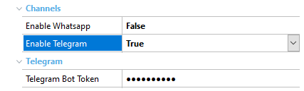
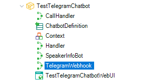

This document explains the necessary steps to integrate your chatbot with Telegram.
To integrate Telegram into your chatbot, you will need to set the Enable Telegram property to True. When this property is applied, the Telegram Bot Token property will be displayed to configure the corresponding token as described in the article Creation and configuration of a bot in Telegram.

As a result, the resources required for integration with Telegram will be imported into the KB.
After saving, the TelegramWebhook procedure will be imported into the KB, and will act as the receiver of messages sent to the bot via Telegram. TelegramWebhook will be responsible for processing the query received, thus obtaining the message to load the corresponding configuration in ChannelConfiguration. Next, it will send the received input to the chatbot; the reply message will be sent through the same channel.

To make the webhook configuration easier, a procedure called SetWebhookURL is available, which can be found in the GeneXusChannels module. It receives a URL, which must be HTTPS, to be configured as the chatbot's webhook URL.